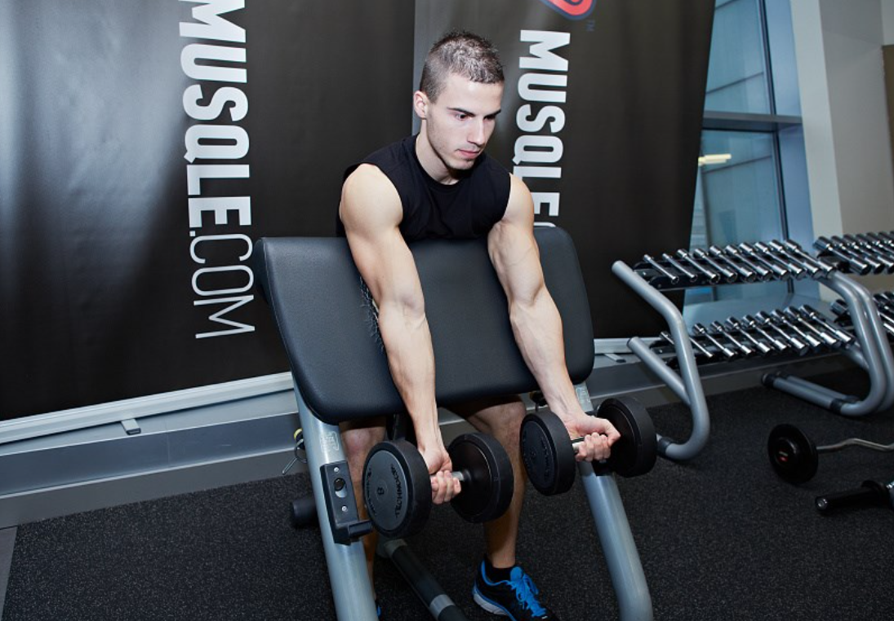
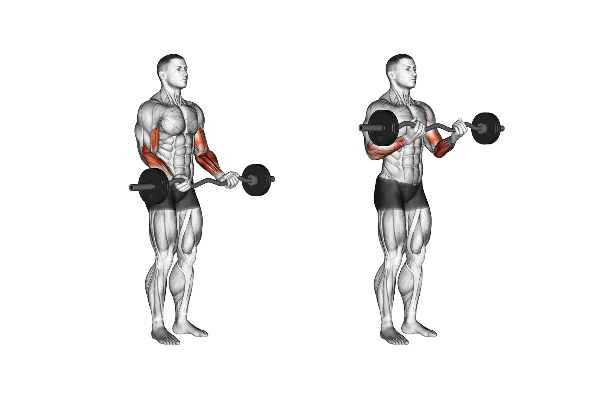
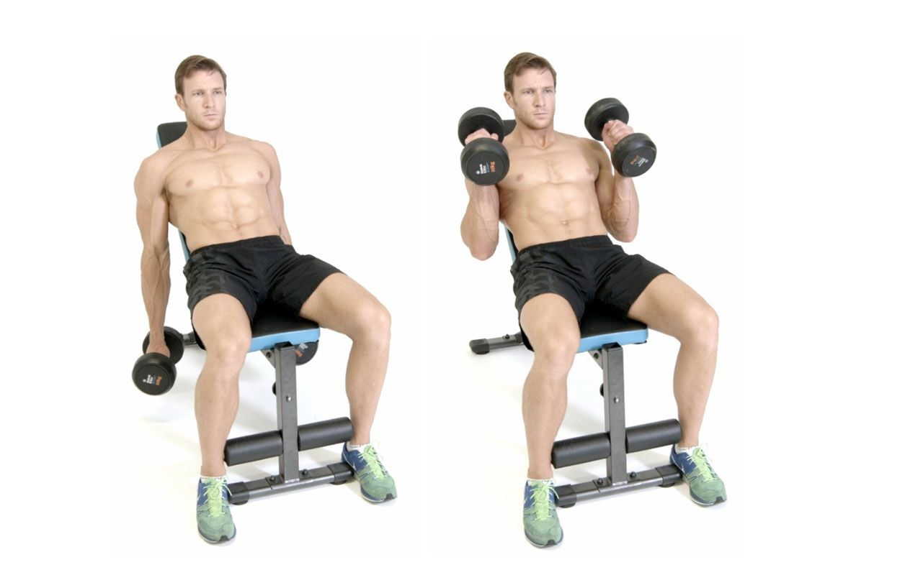

Preacher Curl
The preacher curl is a biceps exercise that involves sitting at a preacher bench — a bench with a seat and a separate, angled pad used to immobilize the rest of the body. The move is done with your feet on the floor, and the pad in your armpits. In this position, you curl weight(s) toward your shoulders. Sit tall at a preacher curl bench with your knees bent and feet flat on the floor. The angled preacher pad should fit snugly under your armpit.Hold dumbbells at arm’s length with an underhand grip, palms facing up. Each upper arm should be in line with your forearm so that when your elbow is extended, your arm forms a straight line from your shoulder to your fingers. Keeping your palms facing up, bend your elbows to bring the dumbbells up towards your shoulders. Don’t go all the way up, though! Stop when your biceps is at peak contraction, around when your forearm is just about perpendicular to the floor. This will keep tension on the biceps instead of letting them go slack. Squeeze your biceps at the top. Control the weight as you lower back to the starting position, finishing with your elbow just slightly bent so you don’t overextend the joint.
EZ Bar Bicep Curl
The EZ bar curl is a commonly used biceps exercise variation that offers advantages over a straight barbell due to its curved groovy shape. It allows for a more natural and neutral wrist position thereby alleviating potential wrist strain and discomfort. Grip the EZ curl bar with hands at a comfortable angle and at the desired hand width (e.g, narrow, medium, or wide). Stand straight with shoulders neutral or pulled back and keep arms by your sides. Curl the bar up and squeeze your biceps, then lower the bar under control but keep a bend in your elbow to maintain tension on your biceps. Repeat for the desired number of reps.
Incline Bench Hammer Curls
While they may be relatively simple, mastering a hammer curl is about more than just turning your hand 90 degrees. Start by sitting on a bench with the back setup in the upright position and two dumbbells at your sides. You can choose to do hammer curls standing, but you’re only going to increase the chance of performing the exercise with a swinging movement, which is best avoided. While sitting, keep your elbows tight to your sides and pull your shoulders back so that you’re less tempted to use your deltoids. Pick up the dumbbells and hold them at them top end of the dumbbell, rather than gripping them in them middle. With your arms fully extended and in a neutral position (so your hands are facing each other) curl the dumbbells until your thumbs are near your shoulders. While there are benefits to both fast and slow reps, beginners are going to benefit most from spending time under tension, so try counting to two during the concentric (lifting) and eccentric (lengthening) part of the movement. Pause at the top of the movement, before lowering the dumbbell under control. That’s one rep.